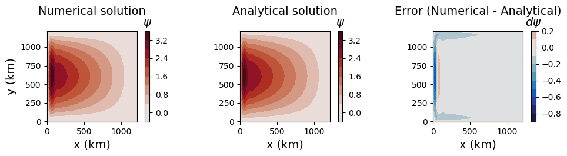

barotropic gyre
The barotropic gyre test case implements the Munk model for a simplified, wind-driven gyre (Munk 1950). It is a variant of the Stommel model except it uses Laplacian horizontal viscosity rather than drag to balance the wind stress. As such, this test case may be used to verify the Laplacian viscosity term and the wind stress forcing term.
The test case is barotropic.
Here, we linearize the momentum equations to permit comparison against an analytical solution. The nonlinear solution would be a logical extension of this case and should be qualitatively similar.
description
A successful test shows the development of a western boundary current and clockwise circulation. The comparison with the analytical solution is performed via a streamfunction. The L2 norm is printed and the following figure is produced:
{kind=link}
mesh
The mesh is planar with dimensions given by the config options lx and ly
and the resolution given by the config option resolution. The defaults are
1200 km x 1200 km and a resolution of 20 km but different mesh dimensions and
resolutions may be tested. The resolution will be compared with the estimated
lateral boundary layer width to ensure that the western boundary current will
be adequately resolved.
The boundary conditions are non-periodic in both x- and y-dimensions.
vertical grid
As this test case is barotropic, the default number of vertical levels is 1. A different number of vertical levels may be specified by the user. The bottom topography is flat so this is not a test case for which different vertical coordinates would be informative.
# Options related to the vertical grid
[vertical_grid]
# The type of vertical grid
grid_type = uniform
# Number of vertical levels
vert_levels = 1
# Depth of the bottom of the ocean
bottom_depth = 5000.0
# The type of vertical coordinate (e.g. z-level, z-star)
coord_type = z-star
# Whether to use "partial" or "full", or "None" to not alter the topography
partial_cell_type = None
# The minimum fraction of a layer for partial cells
min_pc_fraction = 0.1
initial conditions
The initial condition is at rest. Since the test case is barotropic, only a
reference density is provided with the config option rho_0. A beta-plane
is indicated by the coriolis parameter and determined by the config options
f_0 and beta.
forcing
This test has a constant wind stress field following:
where tau_0 is given by a config option.
{kind=link}
config options
[barotropic_gyre]
# distance in kilometers between cell centers
resolution = 20
# Longituidinal domain length in kilometers
lx = 1200
# Latitudinal domain length in kilometers
ly = 1200
# Maximum amplitude of the zonal wind stress [N m-2]
tau_0 = 0.1
# Horizontal visocity [m2 s-1]
nu_2 = 4e2
# [s-1 m-1]
beta = 10e-11
# [s-1]
f_0 = 10e-4
# homogenous fluid density [kg m-3]
rho_0 = 1000
The config option nu_2 specifies the del2 horizontal viscosity. This value
will be compared against the resolution to check for stability at set-up. All
other config options are explained further in previous sections.
cores
The number of cores is determined by goal_cells_per_core and
max_cells_per_core in the ocean section of the config file.
supported models
These tasks support only MPAS-Ocean.
default
The default case is designed such that only a short forward run is performed.
However, when users set up the default case, a long forward run is also set
up and may be run along with the analysis step to compare the numerical
solution with an analytical solution. The user should change the
barotropic_gyre: steps_to_run config option to include desired steps.
time step and run duration
The time step for forward integration is set as a function of the CFL
condition assuming a maximum velocity of 1 m/s and a function of the coriolis
parameter f_0. The stability parameter is set to 0.25 based on the stability
of MPAS-Ocean for this test case.
The run duration is 3 time steps for the short_forward step and 3 years for
the long_forward step.